Power Query көмегімен Power BI бағдарламасында деректерді дайындау және түрлендіру
Жұмыстың мақсаты
Excel файлындағы деректерді Power BI Desktop бағдарламасына қосу үдерісін меңгеру және Power Query редакторында деректерді дайындаудың практикалық дағдыларын қалыптастыру: деректер типтерін тексеру, мәндерді тазалау және түрлендіру, қайталанатын жазбаларды жою, бағандарды бөлу және деректерді топтау, пайдаланушының есептелетін бағанын және индекс бағанын құру.
Зертханалық жұмысты орындағаннан кейін студент:
- жергілікті Excel файлын Power BI Desktop бағдарламасына қоса алуы;
- Navigator терезесімен және Power Query редакторымен жұмыс істей алуы;
- импортталған деректер жиынының құрылымын талдай алуы;
- деректер типтерін тексеріп, өзгерте алуы;
- деректердің таралуы мен сапасын бағалай алуы;
- қате мәндерді анықтап, өңдей алуы;
- таңдалған бірегейлік кілтін ескере отырып, қайталанатын жазбаларды жоя алуы;
- мәндерді ауыстыру және бағандарды бөлу амалдарын орындай алуы;
- деректерді топтап, жинақталған көрсеткіштерді есептей алуы;
- пайдаланушы бағандарын құрып, индекс қоса алуы;
- Applied Steps аймағындағы әрекеттер ретін бақылай алуы;
- дайындалған деректерді Power BI моделіне жүктей алуы тиіс.
Қажетті материалдар
- Power BI Desktop;
- Financial Sample.xlsx файлы;
- Financial Sample.xlsx файлындағы financials оқу деректер жиыны.
Қысқаша теориялық мәліметтер
1. Power BI бағдарламасында деректерді қосу
Деректер көзіне қосылу — аналитикалық есеп құрудың алғашқы кезеңі. Деректер көзі таңдалғаннан кейін Power BI бағдарламасы Navigator терезесінде деректер құрылымын алдын ала қарауға және оларды бірден жүктеу немесе алдымен түрлендіру қажеттігін анықтауға мүмкіндік береді.
2. Power Query және ETL үдерісі
Power Query деректерді алу, түрлендіру және жүктеу үшін қолданылады. Оның жұмысы ETL қағидатына сәйкес келеді: Extract — алу, Transform — түрлендіру, Load — жүктеу. Орындалған барлық амалдар бірізді қадамдар түрінде тіркеледі, бұл деректерді дайындау үдерісін түсінікті әрі қайта орындауға болатын етеді.
3. Деректер сапасы
Модель құру алдында деректер типтерін, бос мәндерді, қателерді, қайталанатын жазбаларды, мәндердің бірізділігін және кесте құрылымын тексеру қажет. Қате типтер, бос жолдар мен қате мәндер кейінгі талдау нәтижелерінің сенімділігіне әсер етуі мүмкін.
4. Қайталанатын жазбалар және жазбалардың бірегейлігі
Жеке мәннің қайталануы бүкіл жазбаның қайталанатынын білдірмейді. Бір сегмент, ел немесе өнім көптеген жолдарда заңды түрде кездесуі мүмкін. Қайталанатын жазбаларды жою алдында жазбаның бірегейлігін нақты сипаттайтын өрісті немесе өрістер жиынтығын анықтау керек.
5. Түрлендірулердің орындалу реті
Power Query бағдарламасындағы әрбір амал Applied Steps аймағында көрсетіледі. Қадамдардың реті маңызды: бастапқы қадамды өзгерту немесе жою кейінгі барлық түрлендірулерге әсер етуі мүмкін.
Практикалық жағдай
Компания талдаушыға Excel форматындағы қаржылық-экономикалық деректер жиынын ұсынды. Модель мен аналитикалық есепті құру алдында деректерді Power BI бағдарламасына импорттап, олардың сапасын тексеріп, Power Query ортасында қажетті түрлендірулерді орындау керек. Нәтижесінде № 11 зертханалық жұмыста модельдеу және визуализациялау үшін жарамды, дайындалған әрі тексерілген деректер жиыны алынуы тиіс.
Жұмысты орындау тәртібі
1-тапсырма. Excel файлын Power BI Desktop бағдарламасына қосу
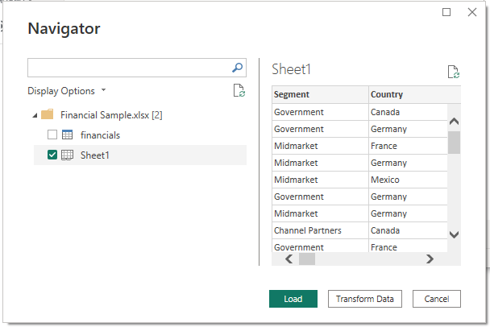
10.1-сурет – Financial Sample.xlsx файлын қосу кезіндегі Navigator терезесі
2-тапсырма. Power Query Editor редакторымен танысу және деректерді тексеру
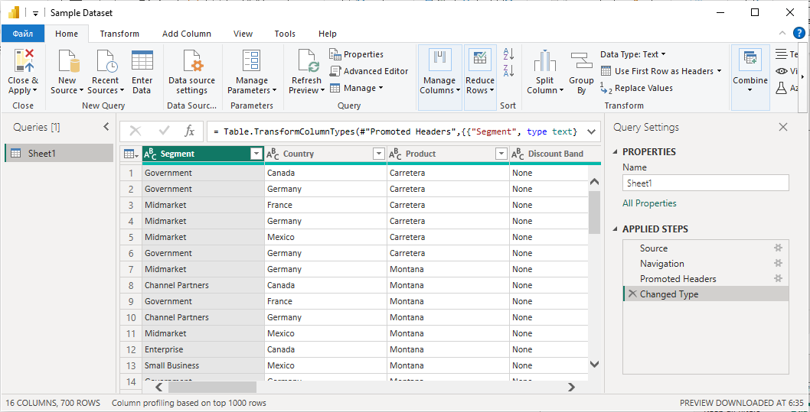
10.2-сурет – Power Query Editor терезесі
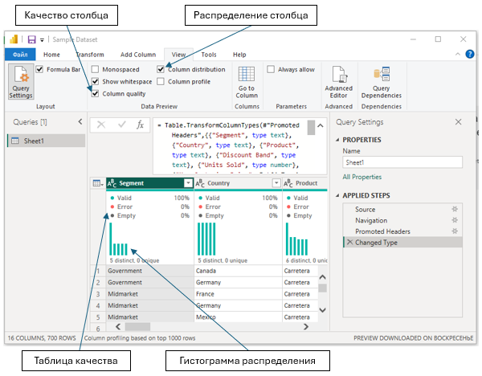
10.3-сурет – Бағандардағы мәндердің таралуы мен сапасын қарау
3-тапсырма. Деректерді тазалау және қайталанатын жазбалармен жұмыс
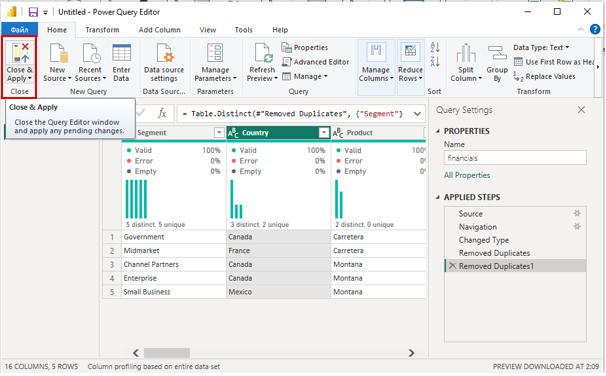
10.4-сурет – Түрлендірулерден кейінгі Close & Apply пәрмені
4-тапсырма. Мәндерді ауыстыру және стандарттау
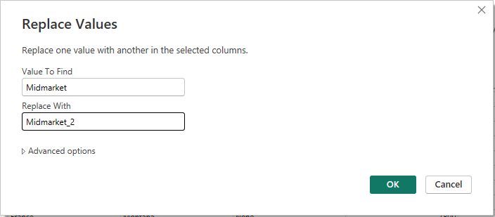
10.5-сурет – Replace Values терезесі
5-тапсырма. Бағанды бөлу
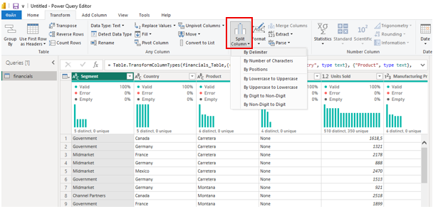
10.6-сурет – Split Column пәрмені
6-тапсырма. Деректерді топтау
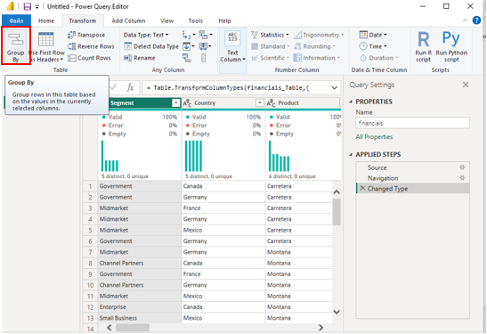
10.7-сурет – Group By пәрмені
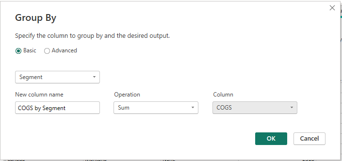
10.8-сурет – Group By терезесі
7-тапсырма. Пайдаланушының есептелетін бағанын құру
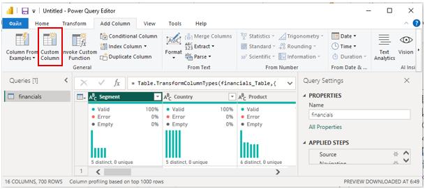
10.9-сурет – Custom Column пәрмені
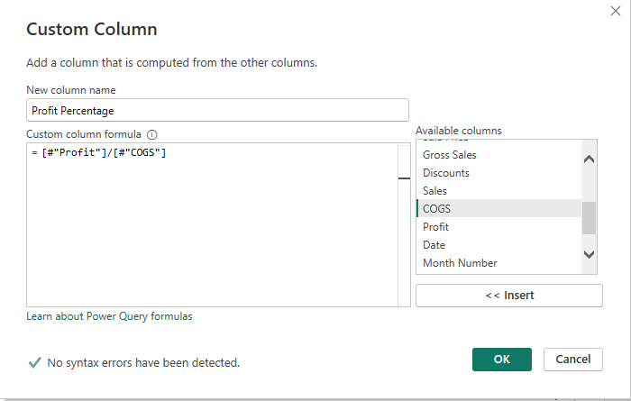
10.10-сурет – Custom Column терезесі
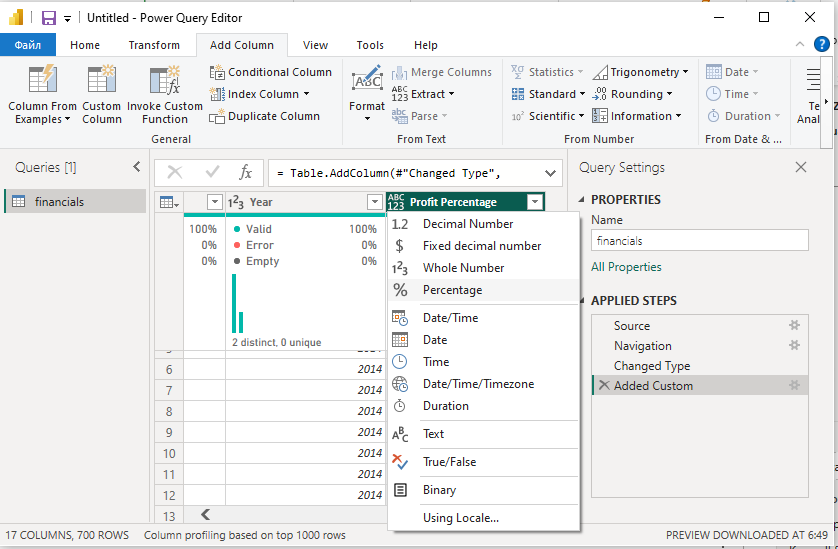
10.11-сурет – Пайыздық деректер типін таңдау
8-тапсырма. Индекс бағанын қосу
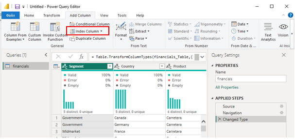
10.12-сурет – Index Column пәрмені
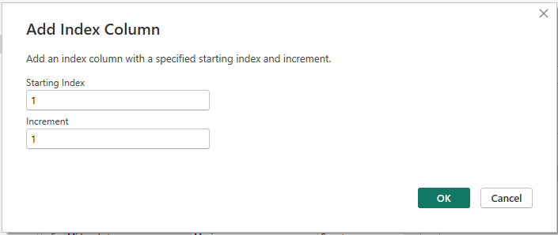
10.13-сурет – Add Index Column терезесі
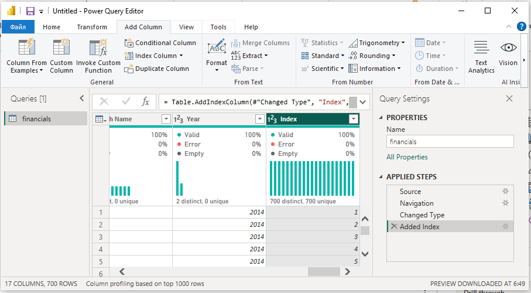
10.14-сурет – Қосылған индекс бағаны
9-тапсырма. Түрлендірулер ретін тексеру
Applied Steps аймағында орындалған амалдарды ретімен қарап, келесі сұрақтарға жауап беріңіз:
қай қадам бірінші орындалды;
қай қадамдар кестенің құрылымын өзгертті;
қай қадамдар мәндерді өзгертті;
қай қадамдар деректер типін өзгертті;
алдыңғы қадамдардың бірі жойылса, кейінгі қадамдармен не болуы мүмкін.
10-тапсырма. Дайындалған деректерді жүктеу
Жұмыс нәтижесіне қойылатын талаптар
Бақылау сұрақтары
Бағалау критерийлері
| Критерий | Ұпай |
|---|---|
| Financial Sample қосу және Navigator терезесімен жұмыс | 10 |
| Деректер типтері мен сапасын тексеру | 10 |
| Қайталанатын жазбаларды негіздеп өңдеу | 10 |
| Мәндерді ауыстыру және стандарттау | 10 |
| Бағанды бөлу | 10 |
| Деректерді топтау | 10 |
| Пайдаланушының есептелетін бағаны | 10 |
| Индекс бағаны | 5 |
| Applied Steps және деректерді дұрыс жүктеу | 10 |
| Есеп, скриншоттар және қорытынды | 15 |
| Барлығы | 100 |
Нәтижелерді сақтап, қорытындыны дайындаңыз. Білімді тексеру үшін eXeLearning жүйесіндегі жеке интерактивті тестке өтіңіз.
Біліміңізді тексеріңіз
Орындаған зертханалық тапсырма бойынша сұрақтарға жауап беріңіз. Әр сұраққа бір дұрыс жауапты таңдаңыз.